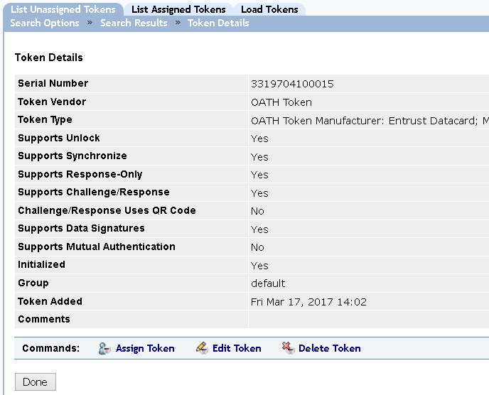
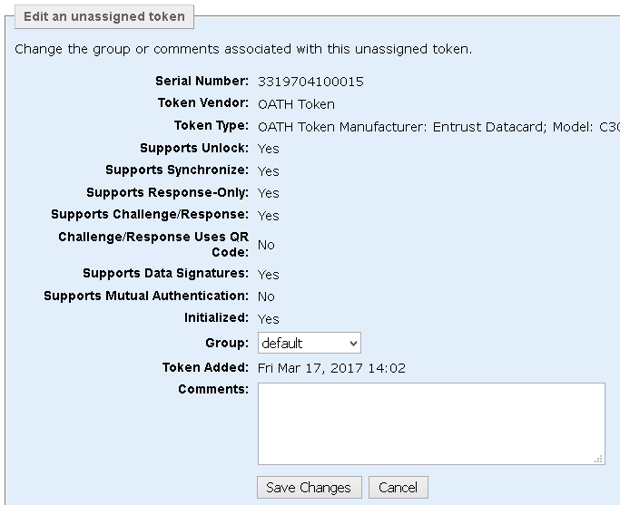

|
IdentityGuard Server 13.0 Administration Guide |
|
IdentityGuard Server 13.0 Administration Guide |
You can edit unassigned token comments and groups. If you move a token to another group, any new challenges are generated using the policies of the new group.
To modify unassigned tokens in bulk, see To modify unassigned tokens in bulk.
Attention: If you are moving all of the tokens from one group to another group in different repositories, you must change the definition of the new group to include the repository containing the tokens you are moving. For details, see Moving data between repositories.
1. Log in to the Entrust IdentityGuard Administration interface as the administrator.
 On the
Windows computer where Entrust IdentityGuard is installed
On the
Windows computer where Entrust IdentityGuard is installed
2. Click Tokens from the menu bar.
3. From the Tokens page, click the List Unassigned Tokens tab.
4. Retrieve a list of unassigned tokens. See Find information about unassigned tokens .
5. When the Search Results page appears, click the serial number of the token you want to modify.
The Token Details page appears. The page includes the token serial number, the vendor, the group it belongs to, and the date its data file was loaded.
The page also tells you if the token supports a token unlock and challenge-response authentication. If not, the token works in response-only mode.

6. Click Edit Token to edit the specified token.
The Edit an Unassigned Token page appears.

7. If multiple activation types are supported by the token vendor, you can change the Token Activation Method. The options are Offline, Online, and None.
8. To change the group, select a new group from the Group drop-down list.
Attention: If you are moving all of the tokens from one group to another group in different repositories, you must change the definition of the new group to include the repository containing the tokens you are moving. For details, see Moving data between repositories.
9. (Optional) Add or change any comments in the Comments box (maximum 2048 characters).
10. Click Save Changes.
The unassigned token is modified.
11. Click Done to return to the Search Results page.
To modify unassigned tokens in bulk
12. Log in to the Entrust IdentityGuard Administration interface as the administrator.
On the
Windows computer where Entrust IdentityGuard is installed
2. Click Bulk Operations on the menu bar.
3. From the Bulk Operation page, click Browse to add the data file. For more information about data files for token bulk operations, see Token bulk operations.
4. From the Operation to Perform drop-down list, select Modify unassigned tokens located under Tokens.
5. From the Halt Processing drop-down list, select the number of errors to allow before processing stops due to too many errors.
For more information about bulk file options, see Perform bulk operations in the Administration interface.
6. Click Perform Bulk Operation.
The Bulk Operation in Progress page appears. The size of your bulk operation directly affects the time the operation takes to process. This page indicates the initial status of the operation.
7. Click Update Results to view the status of your bulk operation. (The Results page is also updated automatically every 10 seconds.)
8. Click Done to return to the Bulk Operation page.